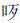

一 一九三○年四月四日
景深兄：
家中叫我早早回平 [2] ，日内不得不搭船北上。你的婚礼 [3] 因而不能看见，深觉罪过！送你一本小书 [4] ，聊表贺意，请你原谅我，接收我那点诚意！敬祝
平安！
书托友人贾君奉上，他与我同船北伐。他是在法国读文学的。
弟舍予躬
4月4日
引自赵景深：《我所认识的老舍》
原载1980年《艺术世界》第一期
二 一九三三年四月
景深兄：
元帅发来紧急令：内无粮草外无兵！小将提枪上了马，《青年界》上走一程。

！马来！参见元帅。带来多少人马？两千来个字 [5] ！还都是老弱残兵！后帐休息！得令！正是：旌旗明日月，杀气满山头！祝
吉～
弟舍予躬 [6]
附臭文一
三 一九三三年十二月
景深兄：
幸不辱命，赶成一篇 [7] 。此篇文字尚欠斟酌，但不失为得意之作——有点像莫泊桑。请多赏两个酒钱，以示鼓励。祈留版权。前载过之《马裤先生》忘书“留”字，但仍欲归入短篇集中，应扣之酬金请由此次扣留。谢谢！
像片已送给《矛盾》月刊一张，如不愿重出，即希存在尊处吧。祝
吉～
附文一
像片一 [8]
弟舍予躬 [9]
引自赵景深：《我所认识的老舍》
原载1980年《艺术世界》第一期
四 一九三四年四月二十八日
景深兄：
诚如君言，无事不登三宝殿；但希有求必应！《小坡的生日》本应在4月出版，但上海之战，将它的底版也烧坏。听说“商馆”因此不再印它。这篇东西颇得冰心之赞赏，为小孩子读也确还过得去。您有意思要没有？您是个提倡儿童文学的，所以我一向忘了它，而今心血忽然来潮，掐指一算，便算到您。您如愿要的话，我有现成的稿子，卖也好，抽版税也好 [10] 。
不过，如您愿要，请分神和徐调孚提一声，问他商务是否决不再印它。我给他去信问过此事，他始终没答复我——或者因为忙的缘故。他——现在管文学会的事——如说yes，咱们的交易便可成功。自然您要说no，我也不恼 [11] 。我倒不必一定要印它，不过弃之可惜罢了。暇时祈赐示！先谢谢！祝
吉～
弟舍予躬
廿八日
引自赵景深：《我所认识的老舍》
原载1980年《艺术世界》第一期
五 一九三四年十二月十九日
景深兄：
谢谢信！收据一纸奉上，祈纳。
以前所写的长篇，都是利用年假与暑假的工夫，因此，已有两三年没休息过。今年年假与明年暑假决定休息，所以不敢答应“长”买卖；虽然对您与小峰先生的赏脸是十二分感激的。我写长篇还是非一气写全不可，叫我随写随在杂志上发表，我便不定写到什么地方去，本来我就是信口开河，结构向来不精好，这么一来便更漫无限制了。早有人提议叫我写点发表点，而后成书，可是我不敢。有这点限制，又加上暑假决定休息，恐怕明年一年不会写长篇了。看吧，假如明年秋间能离开学校，那便好办了。我很希望不再教书。自然从经济上看，我现在还不敢说我能专靠写文章吃饭，除非得了五十万的头彩。
关于条件，就暂不必提吧；等多喒我有工夫写再说。只要能写，条件是好说的，因为我的天性随和，不会瞪眼要大价。
我想了好久，确是非休息一个暑假不可了。我一想：不休息则会累死；累死则不能吃饭；不能吃饭则损失甚大。决定休息，甚合逻辑。
东华，《文艺月刊》，早就要长篇，也都谢绝，因为要休息哟。平日一面教书，一面写，只能写短文。那么，决定歇夏，则长篇吹矣。匆复，祝
吉～
弟舍予躬
十九
附收据一。
引自赵景深：《我所认识的老舍》
原载1980年《艺术世界》第一期
六 一九三六年五月
景深兄：
谢谢信！
稿子手下没有，短篇新近才交开明出集子 [12] ，长篇又都有了主儿，如何是好？
《青年界》的稿子，得到明年再说了。你看，老景，我的预定工作已经定到明年夏天；天天干，恐怕还交不上活，怎敢乱应新买卖？看吧，明年暑中有暇必给您一篇。请您原谅吧！干咱们这行的，闲着不好，忙也不好，怎办？匆复，祝
吉～
弟舍予躬
五. [13]
引自赵景深：《我所认识的老舍》
原载1980年《艺术世界》第一期
[1] 赵景深（1902—1985），现代作家、学者，当时任《青年界》编辑。
[2] 作者在英国执教5年，1930年3月回国后住在上海郑振铎家中写完《小坡的生日》，4月接到家中来信，催他回北平。
[10] 《小坡的生日》一书原版藏商务印书馆，被“一·二八”战火烧毁，老舍有意将其改交北新书局出版。